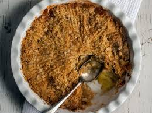

Home
Apple Crumble

With a warm, cinnamon laced apple filling and a perfectly crunchy, crumbly topping, Apple Crumble is an absolute crowd pleaser! Very easy to make, this Apple Crumble recipe is a keeper that you’ll make again and again.
Ingredients:
Steps:
- Weight is BEFORE peeling and coring. I like making this with Granny Smith apples because they are slightly tart. You can use any apples you want, or even pears.
Peaches work too but you can cut back on the sugar a bit. This recipe is also great for any type of berries.
Whatever you use, don’t omit the sugar completely because it’s part of how the filling becomes a bit jammy rather than watery.
- Weights – This recipe is quite forgiving / difference in cup measures are relative so it works whether using US cups or Imperial cups (i.e. what 99% of the rest of the world uses). It won’t work with Japanese cups (which are smaller) so please use the weight measures provided.
- To make ahead, prepare recipe up to just before crumbling topping on top. Cover topping with cling wrap (refrigerate if it’s hot where you are) then crumble over just before baking.
- SWEETNESS: A few readers have said they find this too sweet for their taste. I don’t have an overly sweet tooth, and love this as is. If you like less sweet things, reduce the sugar in the topping down to as low as 1/2 cup. It’s best to keep sugar in Filling as is so the syrup consistency isn’t affected. Also, use green apples – they are less sweet than others.